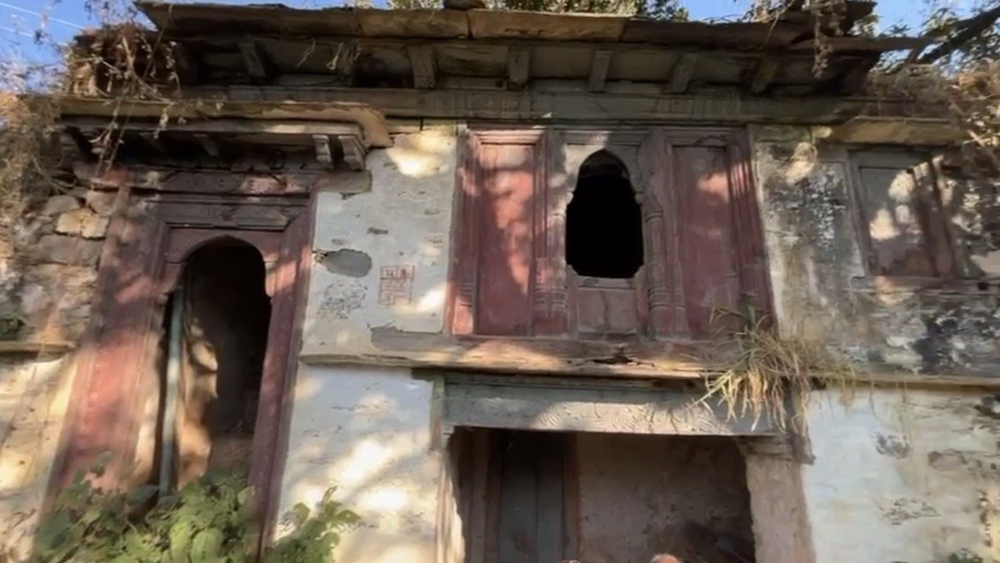
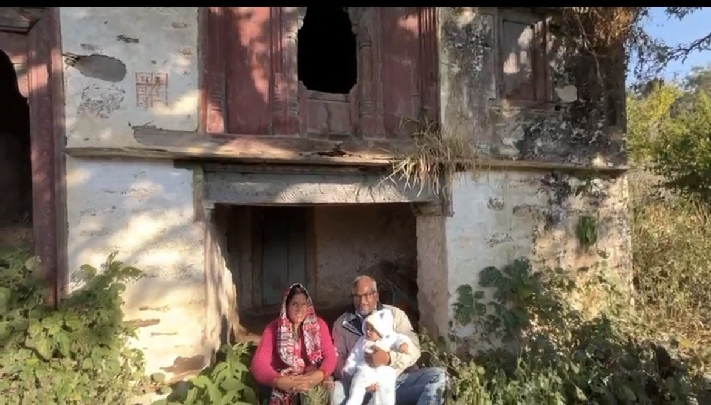
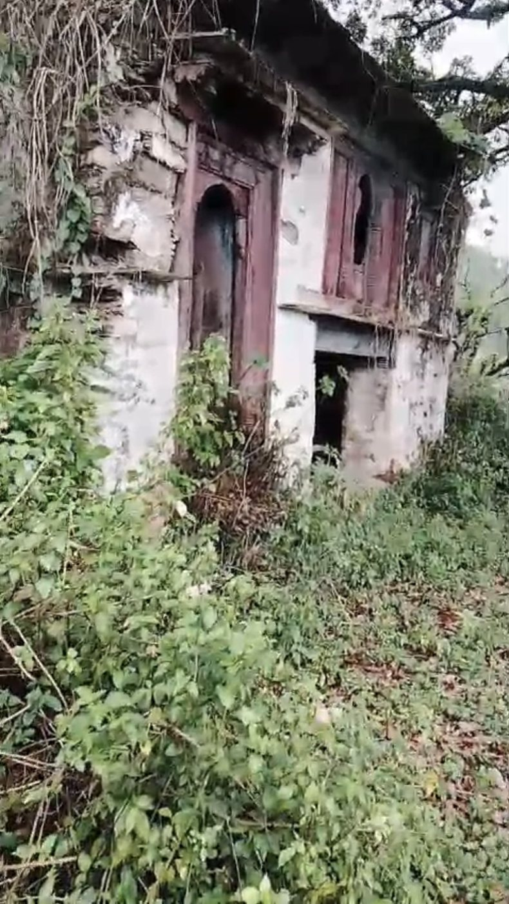
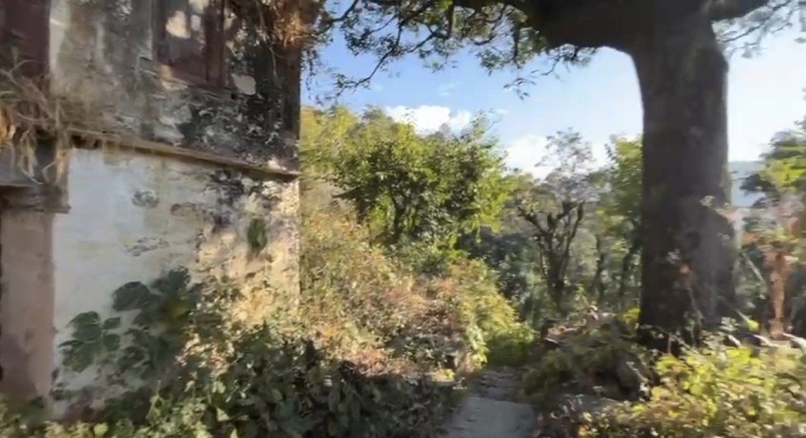
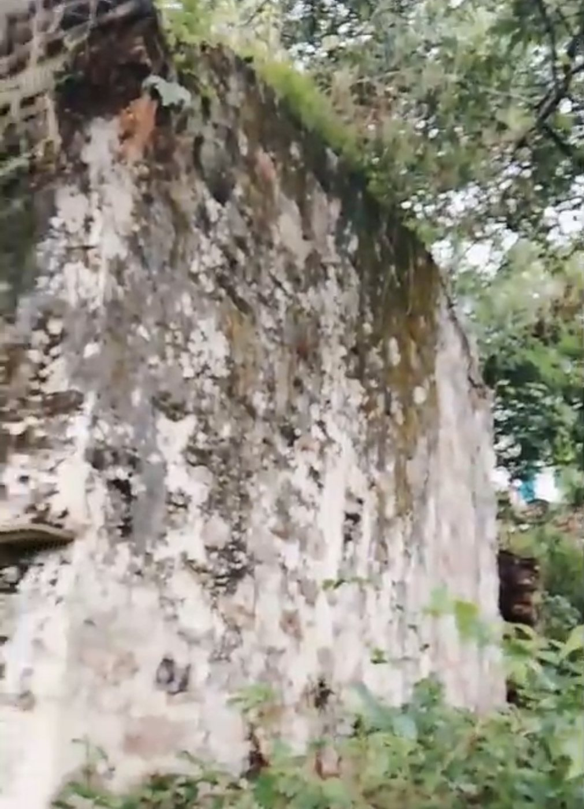
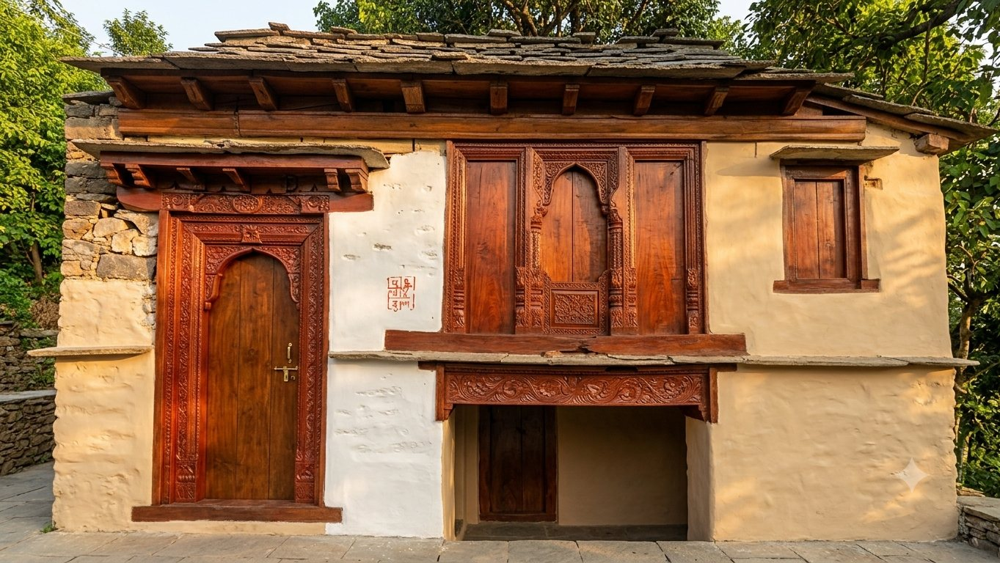

The last known residence of the Pandey clan that still stands today, believed to have been built by Laxmi Dutt. Drag to walk around it, pinch or scroll to zoom, and switch between the house as it stands today and a restored concept.
Two roads lead from Dwarahat to Bairati. Both pass the village school, and from there the same local road climbs to the house.
See the house on the 3D village map Directions in Google Maps





